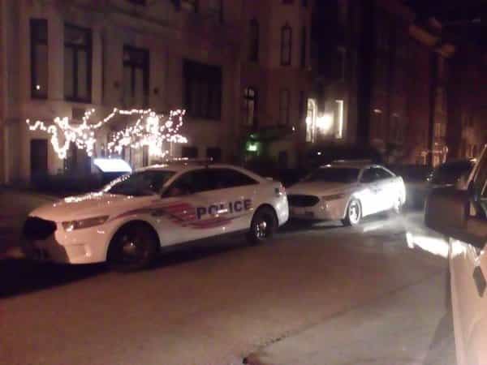

Daryush "Roosh" Valizadeh created ROK in October 2012. You can visit his blog at RooshV.com or follow him on Twitter and Facebook.


By now you’ve probably seen the press conference I held with the media in a Washington DC hotel. As soon as it was over, I began packing up my camera equipment. The friends of mine who were there said I did fine and updated me about the responses coming in on Twitter from those who watched it live.
We all went upstairs to the lobby and I waited at the front desk to settle the conference room bill. While waiting, I noticed three uniformed police officers a few feet away. I thought it was strange for them to be in the hotel. Was a serious crime reported? I would have guessed that they were there for me had I not kept the location private after instructing journalists not to disclose the hotel name to anyone.
My lead bodyguard starting talking to one of the cops. It’s quite common for bodyguards and other executive protection personal to either have worked in law enforcement or be on good terms with them. I squeezed myself into the conversation and asked one of the cops, “So why are you here in the hotel?” He looked at his partner and then looked back at me. “Because of you.”
“Because of me?” I exclaimed. “But how did you know I was here?”
“Because the protesters told us. They’re walking here right now from Dupont Circle.” I immediately suspected one of the journalists for the security leak, who probably sent the location in the middle of the press conference once they realized it wasn’t going in the direction they hoped for. As I learned in Canada, members of the press work directly with social justice activists, in a similar way that branches of Anonymous now attack anyone who the media also happens to hate.
After signing off on the receipt with the hotel, I walked outside with my entourage. I counted four police cars. In other cities around the world, hundreds more policemen were monitoring protests against the meetups, guarding fragile blue-haired women against horrible “rapists.” This was the precise moment that I can say was the most surreal of my life. A week of outrage, threats, anger, and lies culminated at the sight of DC police vehicles while two bodyguards stayed within arm’s reach of me. The situation was so absurd that it didn’t even feel real, but it was real, and hopefully the future for me doesn’t get much more real than that.

My new book, Free Speech Isn’t Free, gives an inside look to how the globalist establishment is attempting to marginalize masculine men with an agenda that promotes censorship and sterility. It also shares key knowledge and tools that you can use to defend yourself against leftist attacks. Click here to learn more about the book. Your support will help fund our operation.
This article was originally published on Roosh V.